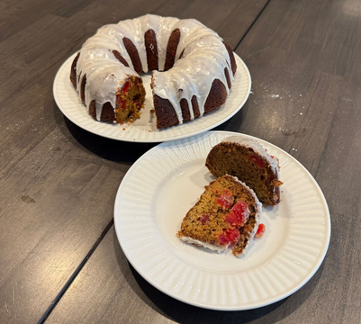
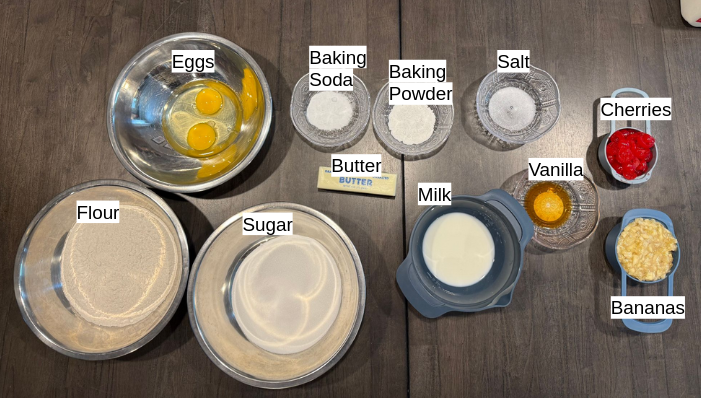
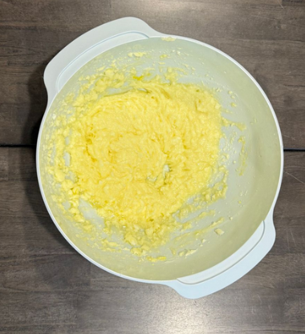
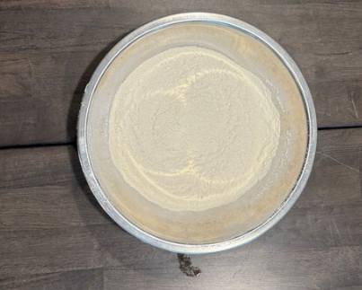
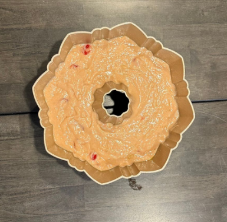
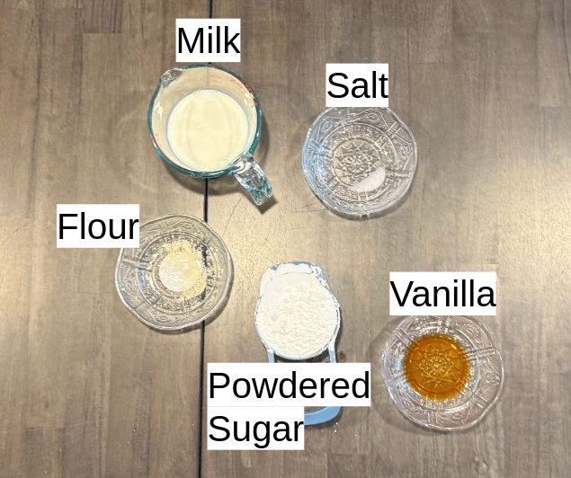
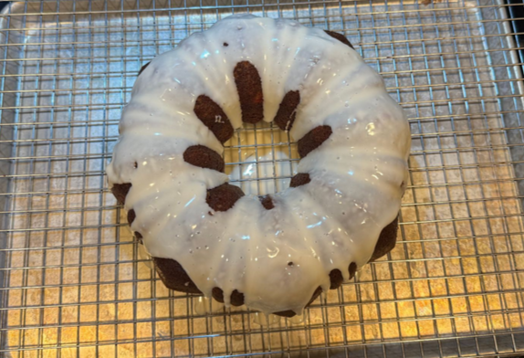

Banana Cherry Bread with Powdered Sugar Icing

This banana cherry bread is a moist, fruity twist on the classic banana bread. The recipe was given to me by my grandmother who also recommended I add cherries for a pop of sweetness. It's topped off with a simple powdered sugar icing that ties it all together. Perfect for breakfast, dessert, or an afternoon treat.
| Activity |
Time |
| Preheat Oven |
10 minutes |
| Prep and Mix Batter |
25 minutes |
| Bake |
45 minutes |
| Cool and Frost |
30 minutes |
| Total Time |
110 minutes |
Banana Cherry Bread
The recipe for banana cherry bread adds a few more ingredients compared to a simple banana bread and in my opinion, this makes it a lot more flavorful. I recomend using a bundt pan so you don’t have any end pieces—though this is optional.
Ingredients
- 1 stick of butter
- 1 1/2 cup sugar
- 2 eggs
- 1/2 teaspoon baking soda
- 2 teaspoons baking powder
- 1/2 teaspoon of salt
- 2 cups of flour
- 1/4 cup of milk
- 1 cup crushed bananas
- 1 teaspoon vanilla
- 1/2 cup cherries

Procedure
- Preheat oven to 350°F.
- In a large dry bowl combine butter, sugar, and eggs into a wet mixture.

- Sift together dry ingredients (flour, salt, baking soda, baking powder).

- Mix in the dry mixture, mashed bananas, and milk into the wet batter, alternating between the three until all are fully incorporated.
- Add the vanilla and fold in the cherries.

- Grease a pan, add the mixture and bake for 45 minutes.
- Let sit for 5 minutes then remove the bread from the pan and place it on a rack to cool for 20 more minutes.
Powdered Sugar Icing
Once the bread has cooled we can make the icing.
Ingredients
- 1/16 teaspoon salt (a pinch)
- 1/16 teaspoon flour (a pinch)
- 1 cup of powdered sugar
- 1 teaspoon of vanilla or other extract
- 1/4 cup milk

Procedure
- In a dry bowl combine salt, flour, sugar, and vanilla.
- Slowly incorporate milk, adding a little at a time until the mixture is thick and spreadable.
- Pour the icing evenly across the bread.

- Let sit for 5 minutes and serve.
Now you have some delicious banana cherry bread that will last for 4 to 7 days. If you want to save it, you can freeze it and it will last for up to 3 months.